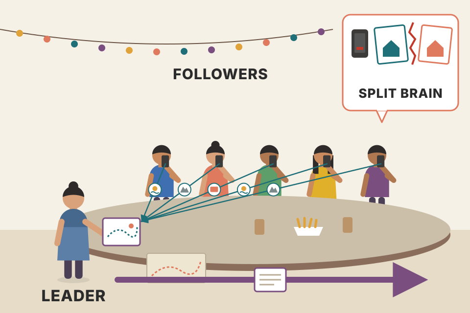
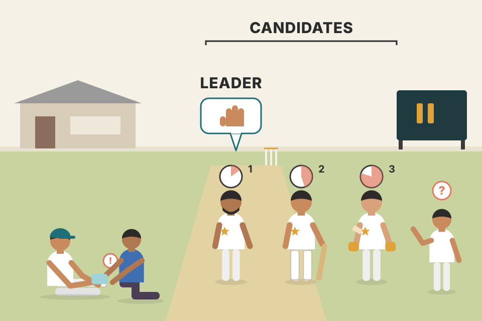
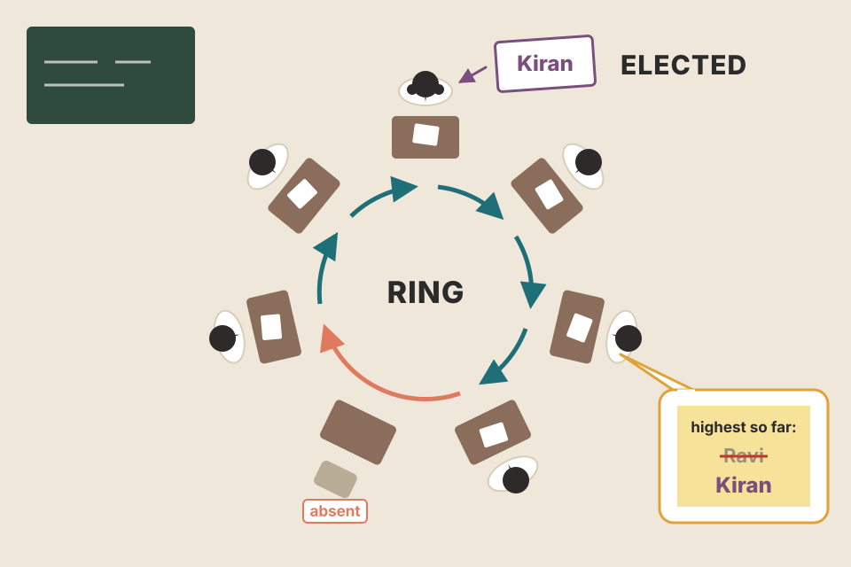
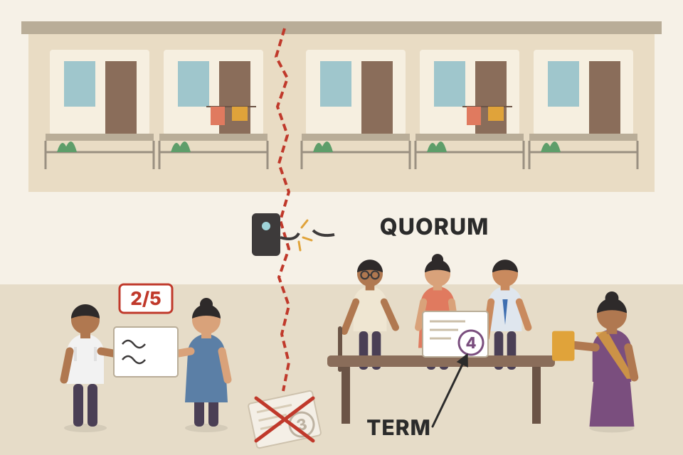

Asking every node about every step is slow. A single leader makes most decisions cheap, but someone has to choose that leader, and choose a new one when it dies. This chapter walks through the classic ways to do it (bully, next-in-line failover, candidate/ordinary, invitation, ring), shows why every one of them can end up with two leaders when the network splits, and points at the real fix: a majority vote, which is consensus (Ch.14). Each algorithm below runs step by step on the page, and the message counts and timings are computed by the same code. Simulations are models with stated assumptions, not measurements.
Read each row as "the problem → the idea → what it still gets wrong". The last row is the punchline of the chapter: none of the algorithms here is safe on its own when the network partitions.
The cost being avoided. Synchronizing is expensive. If every step of an algorithm needs every participant to talk to every other one, the message count and the number of round trips grow quickly, and it is worst in big, geographically spread networks. So many algorithms assume a leader (also called a coordinator): one process that runs or coordinates the steps for everyone.
Who can lead. Processes are normally all alike, so any of them can take the role. Leadership lasts a long time but is not permanent: usually a process stays leader until it crashes. After a crash, any other process may start a new election round, and if it wins, it takes over and continues the failed leader's work.
What leaders are used for. Getting a total order of messages in a broadcast: the leader collects and holds global state, receives messages and spreads them to the others. Coordinating reorganization after a failure, at start-up, or when important state changes.
When an election runs. At initialization (the first leader), and when the previous leader crashes or stops communicating. The result must be deterministic: exactly one leader comes out, and the decision must take effect for all participants.
Election is not the same as a distributed lock, even though both look like "exclusive ownership" in theory:
| Distributed lock | Leader election | |
|---|---|---|
| Do others need to know who holds it? | No. Only that it will eventually be released (liveness). | Yes. The leader has special duties, so it must announce itself to its peers. |
| Preference for some processes? | Bad: a lock that prefers some processes will eventually starve the others, which breaks liveness. | Fine: the leader keeps the role until it stops or crashes, and long-lived leaders are preferred. |
Benefits of a stable leader: no state synchronization between remote participants, fewer messages, and execution driven from one process instead of peer-to-peer coordination. Downside: the leader can become a bottleneck. Many systems answer that by splitting data into non-overlapping, independent replica sets, each with its own leader, instead of one leader for the whole system. Spanner works this way (Ch.13).
Leaders always fail eventually, so the failure must be detected, reported and acted on by electing a replacement. Some consensus algorithms, ZAB, Multi-Paxos and Raft, use temporary leaders to cut the messages needed to agree, but each has its own way of electing a leader, detecting failure, and settling fights between competing leaders (Ch.14).

A group of 8 friends planning a trip on a group chat. If every decision needs everyone to agree with everyone, the chat explodes. If one person is "the planner", everyone sends ideas to the planner, the planner decides and posts the plan once. If the planner's phone dies, the group needs to pick a new planner, and it must be one planner: two planners booking two different hotels is split brain.
Model (not from the book): to order one update, an all-to-all scheme has every node send its view to every other node: n(n−1) messages in one round. A leader scheme sends the update to the leader (1 message), the leader sends it to the other n−1 nodes, and they acknowledge (n−1): 2n−1 messages, but two sequential one-way hops plus acks. Real protocols differ in details; the shape (quadratic vs linear) is the point.
Assumption: each partition is a replica set spread over all nodes, and leaderships are spread evenly (round-robin). The busiest node leads ⌈P/N⌉ of the P partitions.
A leader turns an "everyone talks to everyone" problem into a "star" problem: the number of messages grows linearly instead of quadratically, and there is one place where order is decided, so there is no need to reconcile conflicting orders. The price is that the whole system now depends on one process being alive and reachable, and on everyone agreeing on who it is. Those two needs set up the rest of the chapter: how to detect that the leader is gone (Ch.9) and how to agree on a replacement without ending up with two.
Notes/syllabus.html lists the Raft paper (Ongaro & Ousterhout) under Academic Papers; Section 8 below quotes the election times that paper measured.Every process gets a unique rank. In an election the process with the highest rank becomes leader [MOLINA82]. It is known for being simple. The name comes from the top-ranked node "bullying" everyone else into accepting it; it is also called monarchial leader election, because the highest-ranked sibling becomes monarch once the previous one is gone.
An election starts when a process notices there is no leader (never set up) or the leader stopped answering. The book uses the compact modified bully algorithm [KORDAFSHARI05] (footnote 1), with three steps:
The book's example (Fig 10-1). Leader 6 crashes; process 3 notices and sends Election to 4, 5 and 6. Processes 4 and 5 answer Alive, since they outrank 3. Process 3 tells the highest one that answered, 5. Process 5 becomes leader and sends Elected to the lower-ranked processes.
Problem 1: split brain. Bully breaks safety (at most one leader) when the network partitions. Nodes easily end up in two or more groups that keep working independently, and each group elects its own leader.
Problem 2: a flaky top-ranked node. Bully strongly prefers high ranks. If a high-ranked node is unstable, the system can be stuck re-electing forever: it proposes itself, wins, crashes soon after, comes back, wins again, crashes again, and so on. The book's fix: share host quality metrics and take them into account during the election.
Model (mine, not the book's): 5 nodes; nodes 1–4 never fail; node 5 alternates up/down with exponentially distributed durations. Rank-only = bully: whenever node 5 comes back it calls an election and takes over; when it dies, an election picks 4. Rank + quality = a node only stands if it has been up for the whole last 300 s, so node 5 rarely qualifies and 4 keeps the job. Each leader change costs the "leaderless time" you set. The chart shows the first 30 minutes of one run; the readout pools 40 one-hour runs.
A queue at a passport office where the person with the highest ticket number always gets served first. If that person keeps running out to feed the parking meter and coming back, the clerk keeps stopping whatever they were doing to serve them again. Looking at "how reliable is this person?" and not just "what is their number?" stops the churn.
The algorithm leans entirely on two assumptions: ranks are a total order everybody agrees on, and silence means death. The first makes the result deterministic: if everyone sees the same live set, everyone computes the same maximum. The second is where it breaks: "no answer before the timeout" can mean crashed, slow, or on the other side of a broken link. In step 2, if the higher nodes are only unreachable, the initiator happily declares itself leader. Nothing in the protocol asks "do enough of us agree?", so two disconnected halves both finish successfully. Messages: with initiator i out of n nodes and the old leader n dead, step 1 sends n−i Election messages, step 2 gets back up to n−i−1 Alive replies, then one "you're highest" message, then the winner sends Elected to everyone below it. Starting from the lowest rank that is about 3n messages, but only four sequential hops plus one timeout.
// Modified bully (book, footnote 1). Returns the messages of each step.
// up(x) = "x is alive and reachable"; lost messages still count as sent.
function bullySteps(n, init, up) {
const S = [], higher = range(init + 1, n); // ranks above me
S.push({ msgs: higher.map(t => ({ f: init, t, k: 'elect', lost: !up(t) })) });
const alive = higher.filter(up); // who answered before timeout
let leader = init;
if (alive.length) {
S.push({ msgs: alive.map(f => ({ f, t: init, k: 'alive' })) });
leader = Math.max(...alive); // highest one I heard from
S.push({ msgs: [{ f: init, t: leader, k: 'notify' }] });
}
S.push({ leader, msgs: range(1, leader - 1) // step 3: tell lower ranks
.map(t => ({ f: leader, t, k: 'elected', lost: !up(t) })) });
return S;
}discovery.zen.minimum_master_nodes setting that operators had to set to a majority of master-eligible nodes, or a partition could elect two masters; 7.0 replaced it with a quorum-based cluster coordination layer that tracks the voting set automatically.priority (default 1; priority 0 can never become primary), which is a human-set version of "don't elect the weak host".Many versions of bully improve one property or another. One of them keeps a short list of next-in-line alternative processes, so re-elections are shorter [GHOLIPOUR09].
The book's example (Fig 10-2). Leader 6 has alternatives {5, 4} and crashes. Process 3 notices and contacts 5, the highest alternative. Process 5 answers that it is alive, so 3 does not go on to contact anyone else on the list. Process 5 tells the other nodes it is the new leader (and, in the figure, now carries its own list {4, 3}). The result: fewer steps whenever the next-in-line process is alive.
A team lead going on leave writes "if I'm unreachable, ask Priya; if Priya is out, ask Ravi" on the whiteboard. Nobody has to hold a team-wide vote: the first person who notices calls Priya, Priya says "I've got it", and Priya posts in the team channel.
The leader does the expensive part of the election ahead of time, while everything is calm: it already knows who is alive and highly ranked, so it writes down the answer. At failure time the detector only has to confirm one candidate (one round trip) instead of discovering the maximum (one message to every higher rank and a wait for replies). In Fig 10-2 that is 1 + 1 + 4 = 6 messages against 3 + 2 + 1 + 4 = 10 for plain bully, and three hops instead of four. The list can be stale, though: if every listed alternative is down, the detector wastes a timeout per dead entry. The book doesn't say what happens next; the simulator then falls back to a full bully election (my assumption). And it is still not safe: two detectors on opposite sides of a partition can each reach a different listed alternative.
// alts: list published by the failed leader, highest rank first, e.g. [5, 4]
function nextInLineSteps(n, init, alts, failed, up) {
const S = [], others = range(1, n).filter(x => x !== failed);
for (const a of alts) {
if (a === init) { // I am top of the list
S.push({ leader: init, msgs: others.filter(x => x !== init)
.map(t => ({ f: init, t, k: 'elected', lost: !up(t) })) });
return S;
}
S.push({ msgs: [{ f: init, t: a, k: 'elect', lost: !up(a) }] });
if (up(a)) {
S.push({ msgs: [{ f: a, t: init, k: 'alive' }] }); // "I'm alive, stop here"
S.push({ leader: a, msgs: others.filter(x => x !== a)
.map(t => ({ f: a, t, k: 'elected', lost: !up(t) })) });
return S;
} // dead: timeout, try next
}
return S.concat(bullySteps(n, init, up)); // list exhausted (my fallback)
}This variant cuts messages by splitting nodes into two sets: candidates and ordinary nodes. Only a candidate can end up as leader [MURSHED12].
The book's example (Fig 10-3). Candidates are {1, 2, 6}; ordinary nodes are {3, 4, 5}. Note that candidate membership has nothing to do with rank: 1 and 2 are candidates while 5 is not. Leader 6 fails; ordinary process 4 notices and contacts the remaining candidates (1 and 2). Both answer that they are alive. Process 4 tells everyone the new leader is 2, the highest-ranked live candidate.
Model (mine): 3 ordinary nodes notice the leader's death at random times spread uniformly over the "detection spread". The node with priority p (0 = highest) waits δ = p × step before starting. A node that has not started yet stands down once it hears an election is running; I assume that news reaches it one full round trip after the first node starts (its message out to the candidates, and the answer back to anyone who asks). A trial counts as a duplicate if two or more nodes start. 2,000 trials per point, same seed for every point.

A cricket team where only the vice-captain, the senior batsman and the wicket-keeper are allowed to captain. When the captain gets injured, any player can walk over to those three, check who is fit, and announce the stand-in. If three players notice at once, the rule "the most senior player waits least before speaking" stops three announcements colliding.
Two separate savings. Fewer messages: the initiator polls only the candidate set (size c) rather than every higher rank, so discovery costs about 2c messages, not about 2n. Fewer collisions: δ turns "everyone starts at once" into a staggered queue. The gap between neighbours in that queue must exceed the time it takes the first starter's news to reach the next one; otherwise the next node starts before it hears anything. That is why δ is set above the round-trip time, and why it has to be large compared to the jitter in when nodes detect the failure: if detection itself is spread over 200 ms, a 20 ms stagger barely helps. The δ chart shows exactly that: duplicate elections fall to almost zero only when the step clears both the delay and the detection spread. Safety under partition is unchanged: two ordinary nodes on opposite sides can still each crown a different candidate.
function candidateSteps(n, init, cands, failed, up) {
const S = [], ask = cands.filter(c => c !== failed && c !== init);
S.push({ msgs: ask.map(t => ({ f: init, t, k: 'elect', lost: !up(t) })) });
const alive = ask.filter(up);
S.push({ msgs: alive.map(f => ({ f, t: init, k: 'alive' })) });
if (cands.includes(init)) alive.push(init);
const leader = alive.length ? Math.max(...alive) : null; // highest live candidate
S.push({ leader, msgs: range(1, n).filter(x => x !== init && x !== failed)
.map(t => ({ f: init, t, k: 'elected', lost: !up(t) })) });
return S;
}
// tiebreaker: wait delta(priority) before starting; stand down if you hear one
const delta = (priority, step) => priority * step; // keep step > RTTpriority: 0 are "ordinary" in this sense (they vote but can never become primary), and ZooKeeper observers never vote or lead.Instead of trying to outrank each other, processes invite others to join their group. The algorithm allows multiple leaders by definition, because every group has its own leader.
The book's example (Fig 10-4). (a) Four processes each lead a group of one; 1 invites 2, and 3 invites 4. (b) 2 joins 1's group and 4 joins 3's group. Then 1, leader of the first group, contacts 3, leader of the other, and the remaining member (4) is told about its new leader. (c) The two groups are merged and 1 leads the larger group.
Who leads a merged group? It does not matter for correctness whether the inviter or the invitee becomes leader. To keep messages low, the leader of the larger group should lead the merged one, so only the members of the smaller group need to be told about the change. Like the other algorithms, processes can settle into several groups with several leaders. Its strength: groups can be created and merged without starting an election from scratch, so finishing an election takes fewer messages.
With 4 nodes the steps follow Fig 10-4. With more nodes, groups are paired up in random order each round (seed above), and the inviter contacts a random member of the other group, which may or may not be its leader.
Each point averages 60 runs that merge n singleton groups into one group. "Random pairs" pairs up the current groups at random every round, so merged groups tend to be similar in size and the two policies stay close. "One by one" is the bad case for inviter-leads: each newcomer invites the big group and, if the inviter always leads, everyone already in it must be told. Notifications = messages telling members of the absorbed group about their new leader. Invitations, leader-ID replies and accepts are counted separately in the readout.
Two WhatsApp groups planning the same event. Instead of everyone voting on a single admin, the two admins agree to merge. If one group has 40 people and the other 3, it is cheaper to move the 3 into the big group and post one "welcome, your new admin is X" message to those 3 than to tell all 40 that their admin changed.
The invitation algorithm gives up the goal of "one leader" as a hard rule and treats leadership as something that converges by merging. That makes it naturally partition-tolerant in a liveness sense (each side keeps working with its own leader) and naturally unsafe (there are several leaders, on purpose). The "larger group leads" rule is the same trick as union-by-size in a union-find structure: always relabel the smaller set. Each node can be relabelled only when its group at least doubles in size, so a node is notified at most log₂ n times, and the total notification count is O(n log n) in the worst case. If the inviter always leads, a big group joining a small inviter forces many relabels, and the total can grow towards O(n²). On random pairings the two policies stay close; switch the chart to "one by one" to see inviter-leads grow like n²/2 while larger-leads sends none. (The union-find analysis is mine, not the book's.)
// group[x] = leader id of x. Inviter leader a contacts some member m of another group.
function merge(group, a, m, policy, count) {
let b = group[m];
if (b !== m) { count.reply++; } // m is not a leader: replies "my leader is b"
count.invite++; count.accept++; // a invites b, b accepts
const A = members(group, a), B = members(group, b);
const keep = policy === 'big' && B.length > A.length ? b : a;
const moved = keep === a ? B : A; // the group whose leader changes
for (const x of moved) {
group[x] = keep;
if (x !== (keep === a ? b : a)) count.notify++; // old leader already knows
}
}In the ring algorithm [CHANG79], all nodes form a ring and know its layout: each one knows its predecessor and successor.
The book's example (Fig 10-5). Leader 6 failed; each process has its own view of the ring. Process 3 starts: 3 → 4 → 5 with the set growing {3}, {3,4}, {3,4,5}. Process 5 cannot reach 6, so it skips to 1, then 2, and the full set {3,4,5,1,2} returns to 3. Since 5 is the highest rank, 3 sends a second lap announcing "5".
Variant. Carry only the highest identifier seen so far instead of the whole set, to save space. Because max is commutative (the order you see the IDs in doesn't change the result), the current maximum is all you need. When the message gets back to the initiator, that maximum goes round the ring once more.
Still unsafe. The ring can be partitioned into two or more parts, and each may elect its own leader.
The closing point. For a leader-based system to work, everyone must know whether the current leader is alive, because it must be alive and reachable to do its job. To notice leader crashes we use failure-detection algorithms (Ch.9).

A class passing a sign-up sheet along the rows. Each student writes their name and passes it on; if someone is absent, you hand it to the next person. When the sheet comes back to whoever started it, they read off the tallest-ranked name and send a second note round: "it's Kiran". The variant is a sticky note that just says "highest so far: Kiran", crossed out and rewritten whenever someone outranks it.
The ring trades latency for simplicity. Every step is a single point-to-point message, so the total is small (about one message per live node per lap, ≈ 2n, plus one wasted try per dead node). But the steps are strictly sequential: an election takes about 2n one-way delays, plus a timeout each time a dead successor has to be skipped. Bully finishes in four hops whatever n is. Carrying the whole set costs 1 + 2 + … + n ids on the first lap (≈ n²/2), carrying the max costs n ids: the variant works because max is associative and commutative, so it can be computed incrementally. The set has one advantage: every node on the second lap could learn the full membership (handy for skipping dead nodes without new timeouts); the simulator uses that for the set version only (my modelling choice, not stated in the book).
function ringSteps(n, init, dead, carryMax) {
const S = [], next = x => x % n + 1;
let cur = init, set = [init];
while (true) { // lap 1: collect
const msgs = []; let t = next(cur);
while (dead.has(t)) { msgs.push({ f: cur, t, k: 'elect', lost: true }); t = next(t); }
msgs.push({ f: cur, t, k: 'elect', pay: carryMax ? Math.max(...set) : [...set] });
S.push({ msgs });
if (t === init) break;
set.push(t); cur = t;
}
const leader = Math.max(...set);
cur = init; // lap 2: announce
do {
const msgs = []; let t = next(cur);
while (dead.has(t)) { // max-only: must probe again
if (carryMax) msgs.push({ f: cur, t, k: 'elected', lost: true });
t = next(t);
}
msgs.push({ f: cur, t, k: 'elected', pay: leader });
S.push({ leader, msgs }); cur = t;
} while (cur !== init);
return S;
}The old leader is the highest-ranked node and sits on the right of the cut. Each side elects the highest rank it can reach (as bully or ring would). With the majority rule, a side can only have an effective leader (one that can get anything committed) if it holds more than N/2 nodes. Two majorities of the same N always share a node, so two effective leaders are impossible. A stranded old leader on the minority side may still think it leads; whether it notices and stops by itself depends on leases or a "check quorum" rule (not in the book). The term demo below shows what happens otherwise.
The book states only that a Raft leader discovers its term is out of date and updates it. The vote and message details in this walk-through follow the Raft paper (beyond the book); Ch.14 covers them properly.

A society of 5 flats picks a secretary. If the building's intercom breaks and 2 flats can't reach the other 3, the 2 flats could "elect" a secretary among themselves, and now there are two secretaries signing cheques. The rule "a secretary needs 3 of the 5 signatures" makes that impossible: the 2-flat side can't collect 3. Term numbers are the dated appointment letters: when the old secretary shows a letter from term 3 and everyone else holds one from term 4, the old letter is void.
Every algorithm in Sections 2–6 decides from local evidence: "the nodes I can reach say X". A partition makes that evidence differ on each side, so each side reaches a different, locally correct conclusion. A majority fixes this by geometry, not by better timeouts: any two subsets bigger than N/2 must overlap in at least one node, and that node won't vote twice in the same round (term). So at most one candidate per term can collect a majority. But a stale leader can still believe it leads (it was elected in an older term and hasn't heard the news). Terms (Raft) or ballot numbers (Paxos) make that harmless: every message carries the number, any receiver with a newer number rejects it, and the sender steps down. Safety comes from the quorum overlap; liveness comes from failure detection and timeouts. That is why the book calls "multiple leaders allowed" a performance choice: the protocol lets a would-be leader start work immediately, and the quorum check catches it if it was wrong.
The book presents the algorithms one by one. This plate puts them side by side. All counts below are produced by the same step generators that run the diagrams above, for the scenario "the top-ranked node (the leader) has crashed, every other node is alive, the lowest-ranked node notices first".
The bully and majority-vote lines nearly coincide (3n−4 vs 3n−3). Hops are rounds of messages that must happen one after another; they ignore the timeouts each algorithm also needs (bully waits once for answers; ring waits once per dead successor). Candidate set = the c highest ranks including the dead leader. Invitation is left out: it doesn't elect "after a crash" but merges groups, see Section 5.
| Algorithm | Fixes (vs previous) | Messages | Critical path | Needs to know | Safe under partition? |
|---|---|---|---|---|---|
| Bully (modified) | baseline: simple, deterministic | ≈ 3n | 4 hops + 1 timeout | all ranks | No |
| Next-in-line | skips discovery when the successor is alive | ≈ n | 3 hops | leader's published list | No |
| Candidate/ordinary | polls only c candidates; δ stops duplicate elections | ≈ n + 2c | 3 hops + δ wait | candidate set, priorities | No |
| Invitation | no restart from scratch; groups merge | O(n log n) notifications (larger leads) | depends on merge order | peers outside the group | No (multiple leaders by design) |
| Ring | only neighbour-to-neighbour messages | ≈ 2n | ≈ 2n hops | ring order | No |
| Majority-vote election (Raft/ZAB/Paxos, Ch.14) | split brain: needs > N/2 votes, terms reject stale leaders | ≈ 3(n−1) incl. first heartbeat | 3 hops + random timeout | cluster membership | Yes |
electionTimeoutMillis defaults to 10,000 ms; lower means faster failover but more elections caused by slowness or network blips. priority defaults to 1; priority 0 members can never become primary. MongoDB replica set configurationkube-controller-manager and kube-scheduler in HA setups use a Lease object so only one instance is active and the rest stand by. Kubernetes LeasesCoordination becomes a star (everyone ↔ leader) instead of a mesh (everyone ↔ everyone), so messages grow linearly rather than quadratically, and order is decided in one place. The risks: the leader is a bottleneck (fix: per-partition leaders, as in Spanner) and everyone must agree on who it is, which brings in failure detection and the danger of split brain (Section 1).
Others don't need to know who holds a lock, but every process must know the leader, so a new leader must announce itself. A lock that prefers some processes starves the others and breaks liveness; a leader is supposed to stay put, and long-lived leaders are preferred (Section 1).
3→4, 3→5, 3→6 (Election, 6 is lost); 4→3, 5→3 (Alive); 3→5 (you're the highest I heard); 5→1, 5→2, 5→3, 5→4 (Elected). 10 messages in four sequential hops plus one timeout (Section 2).
Bully treats "no answer from a higher rank" as "no higher rank is alive". Across a partition the higher ranks are alive but unreachable, so the lower side correctly follows the protocol and crowns its own maximum. Nothing checks that a winner is backed by more than half the cluster (Sections 2 and 7).
It keeps winning, crashing and winning again, so the cluster spends its time re-electing. The book suggests spreading host quality metrics and using them in the election, so an unreliable node stops winning (Section 2).
If the detector is itself the highest-ranked process on the failed leader's list, it announces itself straight away. It is still unsafe: detectors in different partitions may reach different listed alternatives and both announce (Section 3).
Only candidates can lead. The candidate set is {1, 2, 6}; 6 is dead, so the highest live candidate is 2. Process 5 is ordinary (Section 4).
The next node in the δ queue must hear that someone already started before its own timer fires; if the gap is smaller than the time for that news to arrive, both start. It isn't always enough because nodes also detect the failure at different moments: if detection jitter is larger than the δ gap, a low-priority node can still start before a high-priority node has even noticed (Section 4 simulation).
Only the absorbed group's members must be told about their new leader, so absorbing the smaller group sends fewer notifications. Repeated over many merges this bounds each node's relabels by log₂ n (union-by-size), giving O(n log n) total instead of up to O(n²) (Section 5; the bound is my analysis).
The winner is max(live set), and max is commutative and associative, so it can be folded in one ID at a time in any order. You lose the membership list (useful for routing the second lap) but save payload: n IDs instead of about n²/2 on the first lap (Section 6).
Bully's messages go out in parallel in four rounds regardless of n; ring's go strictly one after another, about 2n sequential hops plus a timeout per dead successor. For latency, critical path beats message count (Section 8).
Win a cluster-wide majority of votes. Any two majorities of the same N overlap in at least one node, and a node votes once per term, so two leaders can't both be backed in the same term (Section 7).
Electing a leader means all processes agree on one value (the leader's ID) despite failures. A mechanism that achieves that agreement can be used to agree on any value [ABRAHAM13] (Section 7).
A rank is fixed and says who should win; a term is a counter that says which election is newest. Every message carries it, so a leader from an old term is rejected the moment it talks to anyone who has seen a newer term, and it steps down. Ranks can't tell an old leader from a new one (Section 7).
Waiting until you are sure there is exactly one leader would stall progress, since failure detection can't be both fast and certain. Multi-Paxos and Raft let a would-be leader start replicating at once, and safety comes from quorum checks that reject the loser (second quorum in Paxos, stale term in Raft). Liveness from the leader, safety from conflict detection (Section 7).